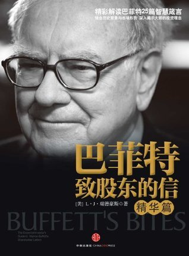

 |
巴菲特致股东的信（精华篇） |
推荐序一 投资就是投人，选股更要选人
在研究高管坦诚度方面，她成了著名的专家。瑞德豪斯创立了瑞德豪斯评级公司，每年进行一次首席执行官坦诚度调查，以便从总体上表明，那些首席执行官坦诚度排名最高的公司，业绩究竟比那些排名最低的公司高出多少。除此之外，她的研究还会判断当前企业文化的健康程度，从而表明公司账目的可信度。
她和巴菲特合作的第一个项目在安然公司破产以及“9·11”恐怖袭击事件之后就着手实施了。2002年年初，巴菲特允许她从自己写给股东的信中进行摘录，写了一本名为《和你信任的人做生意》（Do Business with People You Can Trust）的书。该书于2002年在奥马哈召开的伯克希尔·哈撒韦公司股东大会上发布。巴菲特对自己所说的话一向采取谨慎保护的态度，几年后，瑞德豪斯问他为什么准许她引用他说的话。巴菲特说：“我信任你。”现在，巴菲特再次允许她引用他在致股东信中所说的话，对巴菲特致股东信的解读是她与巴菲特合作的第二个项目。在这本书中，她在多年研究巴菲特致股东信的基础上，总结出巴菲特信守承诺、保持坦诚，并且坚定地相信创造经济价值是首席执行官的黄金标准。